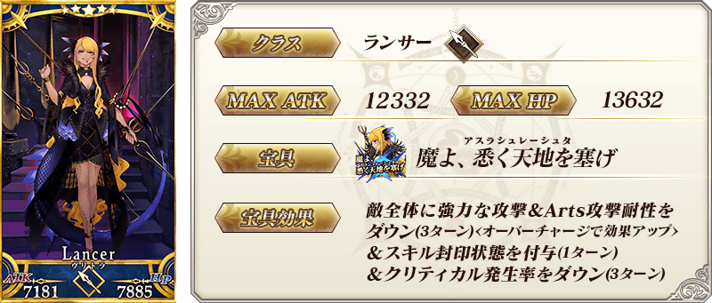
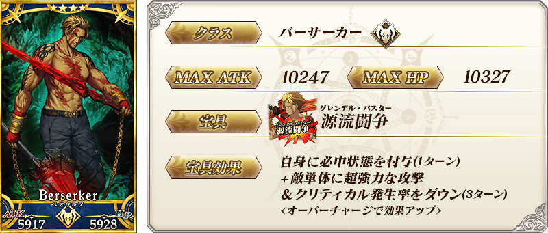
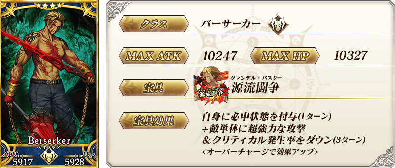
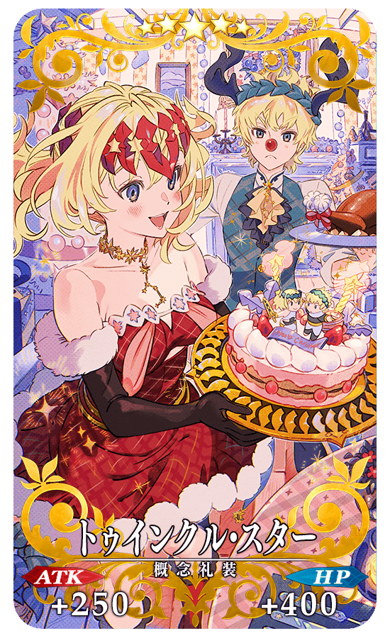
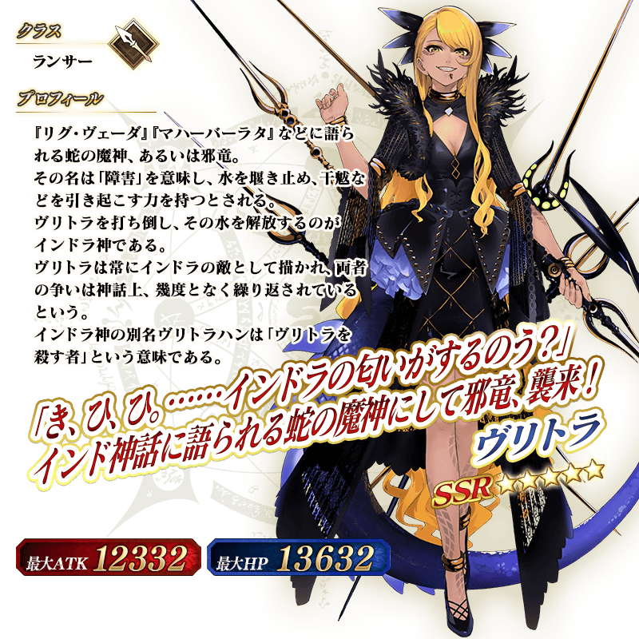

◆「聖誕節2020Pick Up召喚(每日交替)」期間◆
期間:2020年12月16日(三) 17:00～12月30日(三) 11:59
舉辦期間限定「聖誕節2020Pick Up召喚(每日交替)」！
本次從期間限定活動「榮光的聖誕老人之路 ～被封印的聖誕禮物～」關聯從者之中，本召喚中包含1位新登場從者的3位Pick Up！
▼新登場從者
【常駐Pick Up】
・★5(SSR)弗栗多
▼期間限定從者
【每日交替Pick Up】
・★4(SR)瑪爾大(Ruler)
▼Pick Up從者
【每日交替Pick Up】
・★4(SR)貝奧武夫
另外，下述的期間限定概念禮裝常駐Pick Up！
【常駐Pick Up】
・★5(SSR)トゥインクル・スター
・★4(SR)レッド・ボックス
・★3(R)フリーズ・フレーム
裝備上述3種概念禮裝的話，在期間限定活動「榮光的聖誕老人之路 ～被封印的聖誕禮物～」中會提升活動道具的掉落獲得數。
Pick Up期間中，Pick Up對象從者與概念禮裝的出現機率提升！
詳情請在聖晶石召喚畫面左下的召喚詳細確認。
11次召喚中確定1張★4(SR)以上和確定1位★3(R)以上的從者！ ※確定★4(SR)以上包含從者和概念禮裝。 ※本頁面皆為開發中圖片。會有與實際圖片相異的情況。
◆有關從者的注意◆
※請注意下述的從者在本召喚為抽出對象外。
・★4(SR)渡邊綱
※請注意本召喚做為每日交替，下述的從者就算舉辦期間中也有不會被抽出來的日子。
・★4(SR)瑪爾大(Ruler)
※下述的從者在Pick Up期間結束後不會追加到故事召喚。
・★4(SR)瑪爾大(Ruler)
※下述的從者自Pick Up期間結束後的2020年12月30日(三) 12:00，追加到故事召喚。
・★5(SSR)弗栗多
※下述的從者在Pick Up期間結束後仍會在故事召喚被抽出。
・★4(SR)貝奧武夫
◆有關概念禮裝的注意◆
※請注意下述的概念禮裝在本召喚為抽出對象外。
・★5(SSR)恋のお詛咒
・★4(SR)王者の気質
・★3(R)神の舌
※下述的概念禮裝，Pick Up期間中也能靠友情點數召喚獲得。
・★3(R)フリーズ・フレーム
※在自動變還設定登錄★3(R)概念禮裝的情況，下述的概念禮裝會變成自動變還的對象。
・★3(R)フリーズ・フレーム
※2020年12月18日(五) 12:00以後，下述的概念禮裝也不會從故事召喚被抽出，追加至友情點數召喚。
還有，本召喚中，到2020年12月30日(三) 11:59為止會被抽出。
・★3(R)デイ・アフター
◆「聖誕節2020Pick Up召喚(每日交替)」Pick Up內容◆
| Pick Up期間 | Pick Up內容 | |
|---|---|---|
| 全天Pick Up | 每日交替Pick Up | |
|
12/16(三) 17:00～ 12/18(五) 22:59 |
★5 弗栗多 |
★4 貝奧武夫 ★4 瑪爾大(Ruler) |
|
12/18(五) 23:00～ 12/20(日) 22:59 |
★4 瑪爾大(Ruler) | |
|
12/20(日) 23:00～ 12/22(二) 22:59 |
★4 貝奧武夫 | |
|
12/22(二) 23:00～ 12/24(四) 22:59 |
★4 貝奧武夫 ★4 瑪爾大(Ruler) |
|
|
12/24(四) 23:00～ 12/26(六) 22:59 |
★4 瑪爾大(Ruler) | |
|
12/26(六) 23:00～ 12/28(一) 22:59 |
★4 貝奧武夫 | |
|
12/28(一) 23:00～ 12/30(三) 11:59 |
★4 貝奧武夫 ★4 瑪爾大(Ruler) |
|
※請注意會以每日交替變更Pick Up的從者。
 ※上述「★5(SSR)弗栗多」的卡面為靈基再臨第1階段。


 
※上述「★4(SR)貝奧武夫」的卡面為靈基再臨第1階段。

※上述「★4(SR)貝奧武夫」的卡面為靈基再臨第1階段。
|  |
★★★★★SSR |
|
★★★★SR
|

|
★★★R |
 ※上述「★5(SSR)弗栗多」的立繪為靈基再臨第1階段。

介紹「★5(SSR)弗栗多」的寶具演出！
在「Fate/Grand Order」官方網站內的公告中，以影片公開寶具演出，敬請確認。
介紹在本召喚Pick Up的2位從者寶具演出！
在「Fate/Grand Order」官方網站內的公告中，以影片公開寶具演出，敬請確認。
【★4(SR)瑪爾大(Ruler)】
【★4(SR)貝奧武夫】
強化本召喚中登場的「★4(SR)貝奧武夫」的特別關卡「從者強化關卡」，在迦勒底之門永久追加。
不僅進行對象從者的強化，也可獲得聖晶石做為關卡通過報酬。
※從者強化關卡請注意在沒有文字冒險部份。
◆追加時間◆
2020年12月16日(三) 17:00～
◆開放條件◆
持有的強化對象從者，必須使其最終再臨。
※未持有對象從者的話，不會出現關卡。
※關卡沒有舉辦期限。

其他還有，期間限定活動「榮光的聖誕老人之路 ～被封印的聖誕禮物～」同時舉辦！
關於詳情，請自下述橫幅確認。
■「榮光的聖誕老人之路 ～被封印的聖誕禮物～」詳細情報